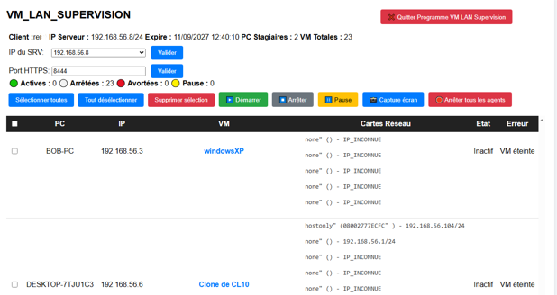

▦
Tableau centralisé
Visualisez les différents postes stagiaires depuis le poste formateur.
VM_LAN_SUPERVISION permet au formateur de suivre les postes stagiaires et leurs machines virtuelles depuis une interface centralisée.

Dans une salle de formation utilisant des machines virtuelles, le formateur peut avoir besoin de connaître rapidement l'état des différents postes et de leurs environnements virtuels. VM_LAN_SUPERVISION rassemble ces informations dans une interface unique.
Une interface simple permettant au formateur de suivre son environnement de formation.
Visualisez les différents postes stagiaires depuis le poste formateur.
Consultez l'état des machines virtuelles associées aux postes.
Une présentation sous forme de tableau permet d'identifier rapidement la situation des postes.
Les informations sont regroupées sur le poste utilisé par le formateur.
Interface de supervision
Ordinateurs des stagiaires
Environnements utilisés pendant les travaux pratiques
VM_LAN_SUPERVISION est pensé pour les établissements qui utilisent des machines virtuelles dans leurs activités pédagogiques.
Le logiciel est destiné à être distribué directement aux établissements intéressés.